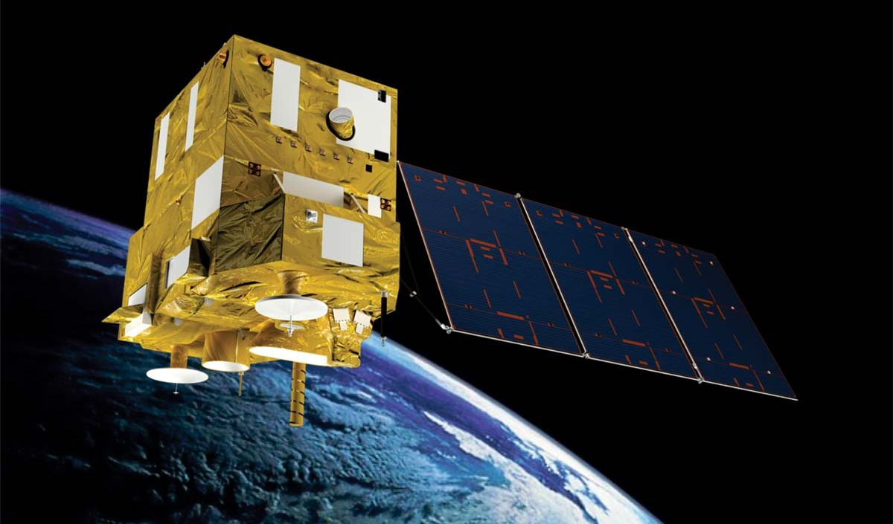
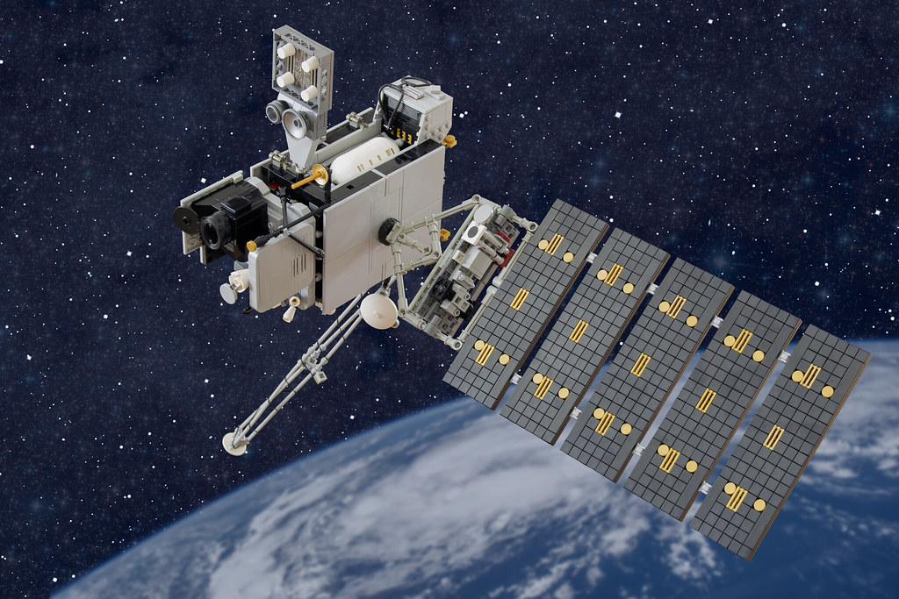
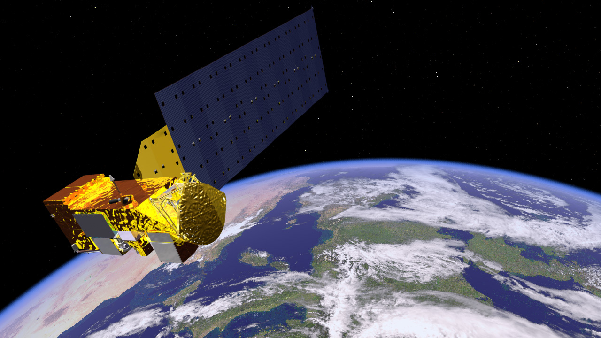

Filtrar:
| ID | Tipo | Localizacao | Severidade | Satelite | Hora | Status |
|---|---|---|---|---|---|---|
| Carregando alertas... | ||||||
Satélites em Operação
Fontes dos dados exibidos nesta central de alertas.

🇧🇷 INPE / CNSA
CBERS-4A
Satélite brasileiro-chinês lançado em 2019. Monitora solo, água e vegetação com resolução de 2 metros. Principal fonte de dados para enchentes e deslizamentos no Brasil.

🇺🇸 NOAA
GOES-16
Satélite geoestacionário americano a 35.786 km de altitude. Cobre toda a América do Sul com imagens a cada 10 minutos, ideal para acompanhar tempestades em tempo real.

🇺🇸 NASA
AQUA / MODIS
Satélite da NASA lançado em 2002. Sensor MODIS detecta focos de calor em infravermelho com cobertura global diária. Referência mundial para monitoramento de queimadas.